Clínica de Ortodoncia · Las Condes, Santiago
La tranquilidad que se siente al contar
con el apoyo de todo un equipo
Quiénes somos
Somos una clínica de ortodoncia de referencia en Las Condes, Santiago. Nuestro equipo de especialistas combina tecnología de vanguardia con un trato cercano y personalizado, acompañándote en cada etapa de tu tratamiento.
Contamos con un Rehabilitador Oral e Implantólogo, permitiéndonos ofrecer una atención integral y multidisciplinaria para los casos más complejos.
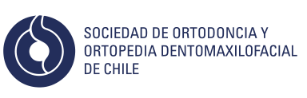
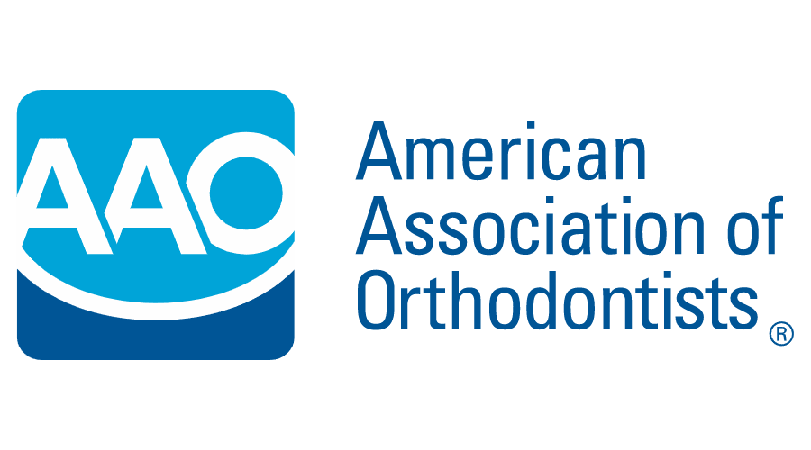
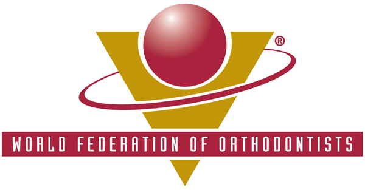
Ortodoncistas con postgrado y miembros de sociedades internacionales de referencia.
Equipamiento de última generación para diagnóstico y tratamiento de precisión.
Clínica con laboratorio propio y equipo multidisciplinario dedicado a tu cuidado.
En el corazón de Las Condes, con fácil acceso en metro y estacionamiento.
Nuestro equipo
Ortodoncista
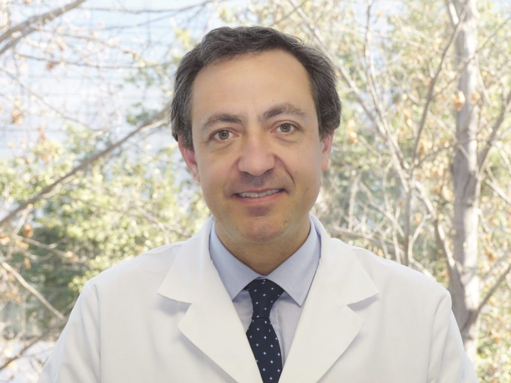
Ortodoncista
Ortodoncista
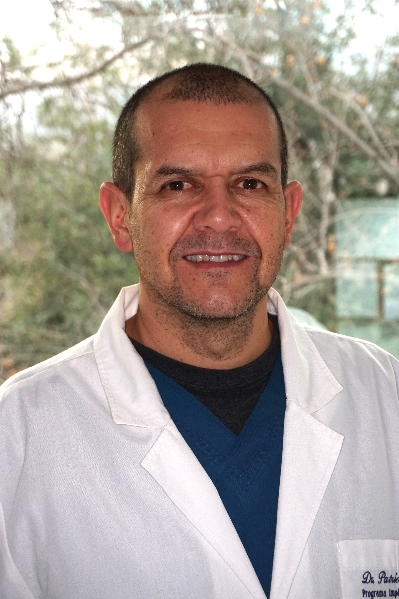
Rehabilitador Oral e Implantólogo
DoctorTest
Secretaria
Secretaria
Asistente Dental
Asistente Dental
Asistente Dental
Asistente Dental
Asistente Dental
Laboratorio
Laboratorio
Aseo y Mantención
Lo que hacemos
Cada paciente es único. Diseñamos planes de tratamiento personalizados para lograr los mejores resultados en tu caso específico.
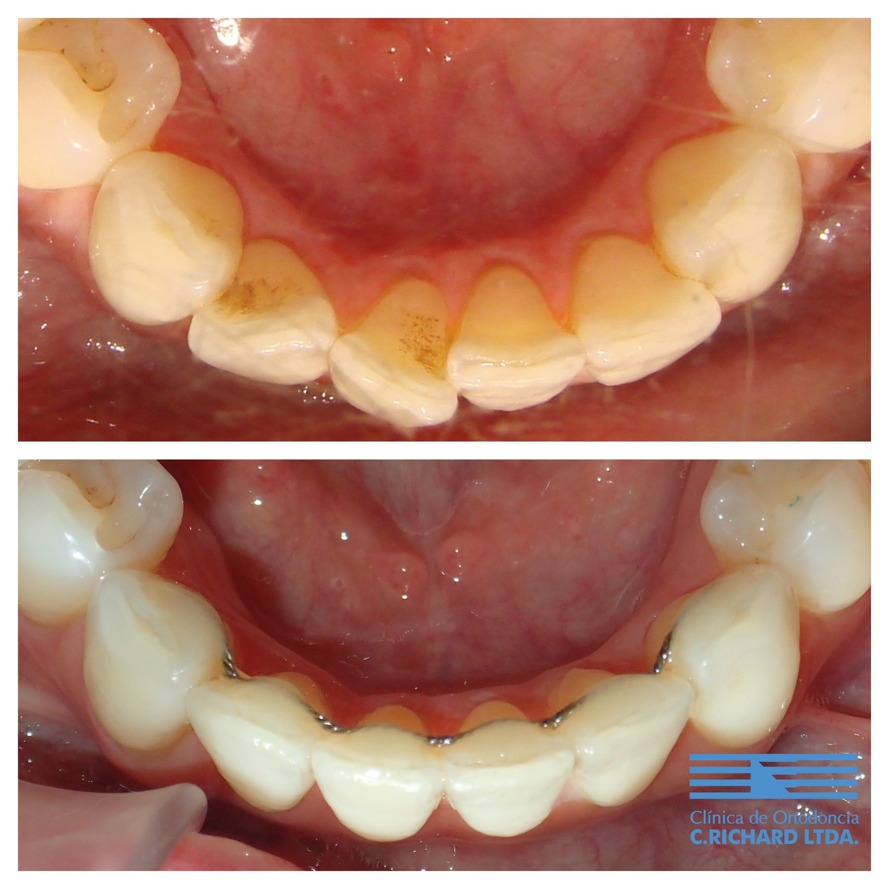
Tratamiento para corregir la falta de espacio y la mala posición de los dientes, logrando una alineación óptima.
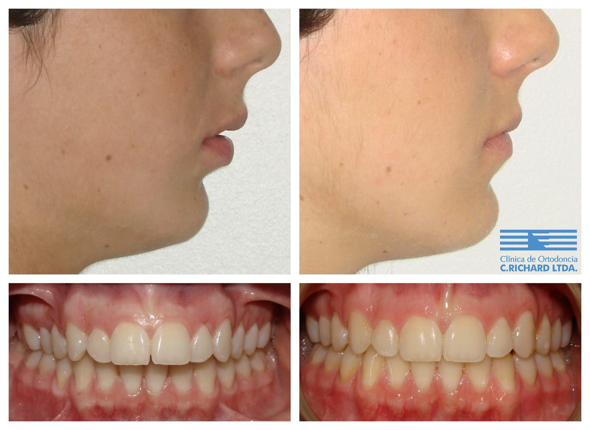
Corrección de la discrepancia entre maxilar y mandíbula mediante ortopedia y ortodoncia especializada.
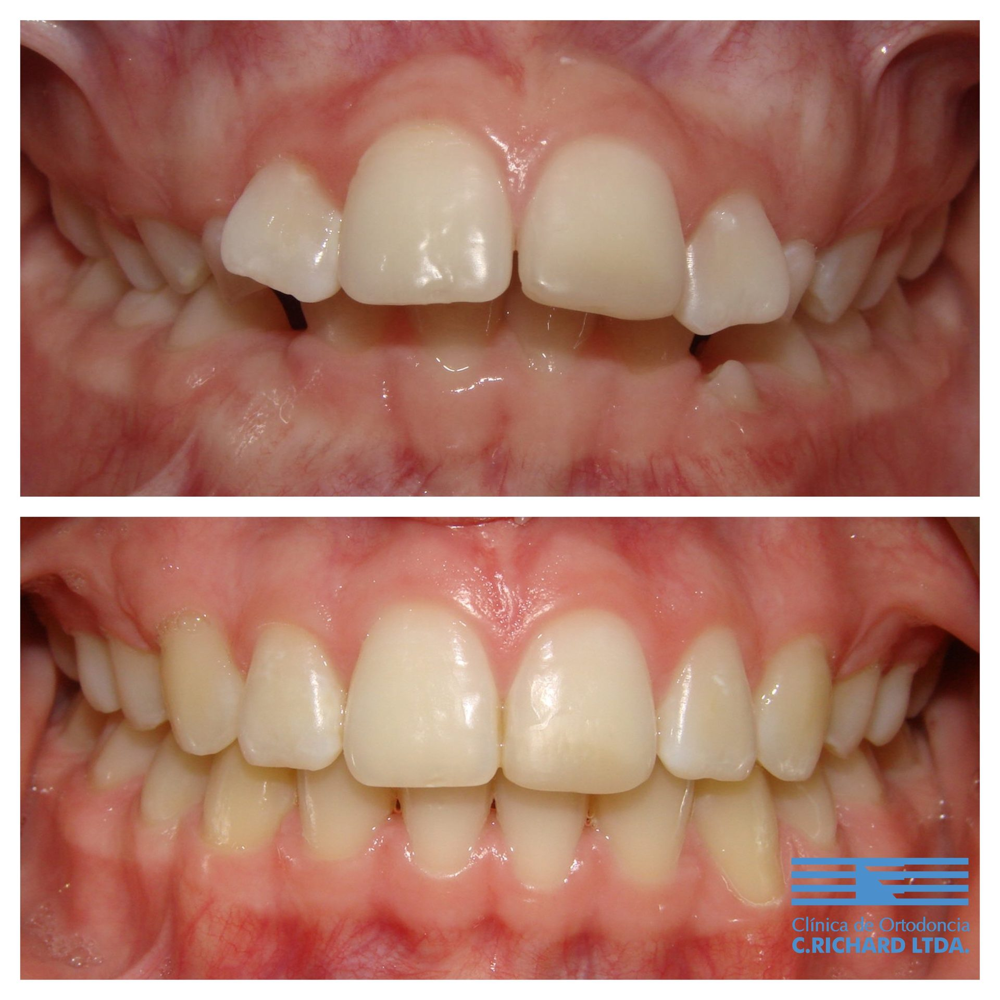
Corrección de la protrusión dental mediante tratamiento ortodóncico para mejorar función y estética.
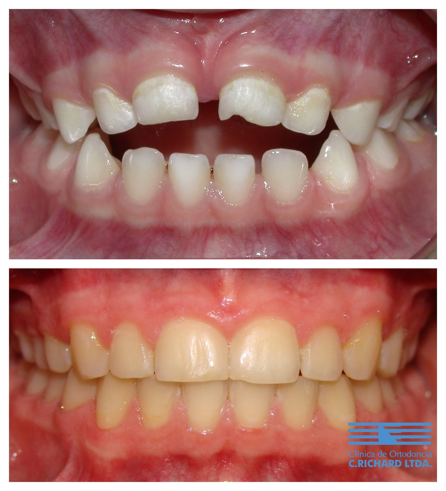
Tratamiento para corregir la falta de contacto entre dientes superiores e inferiores, mejorando la función masticatoria.
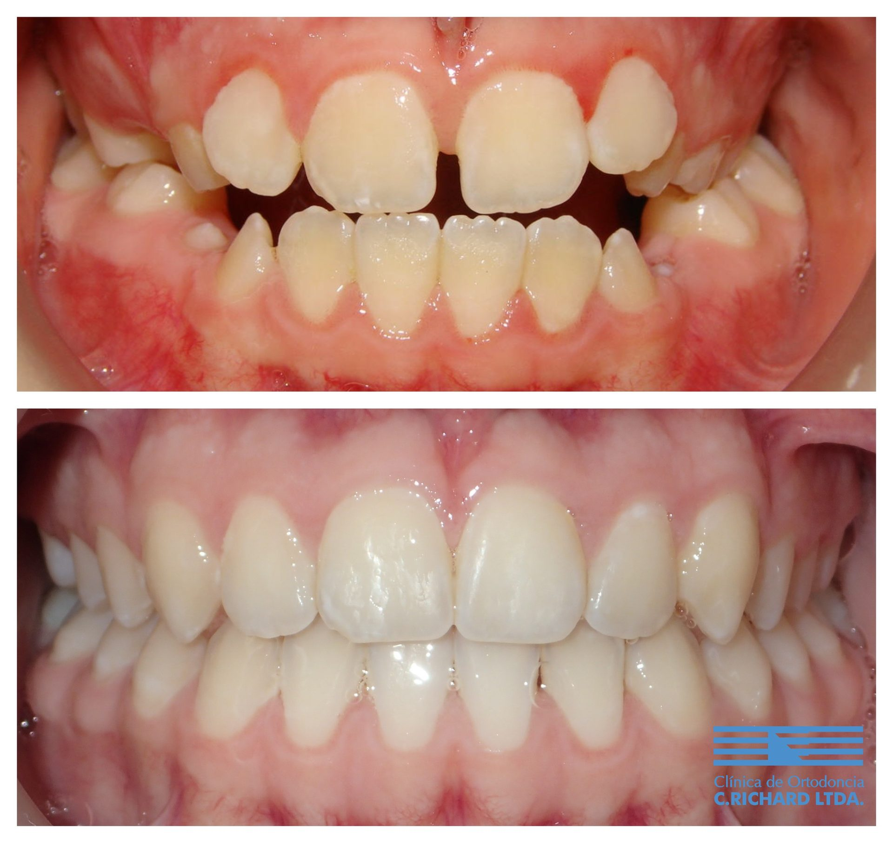
Expansión del maxilar para corregir la falta de espacio y mejorar la relación entre arcadas dentarias.
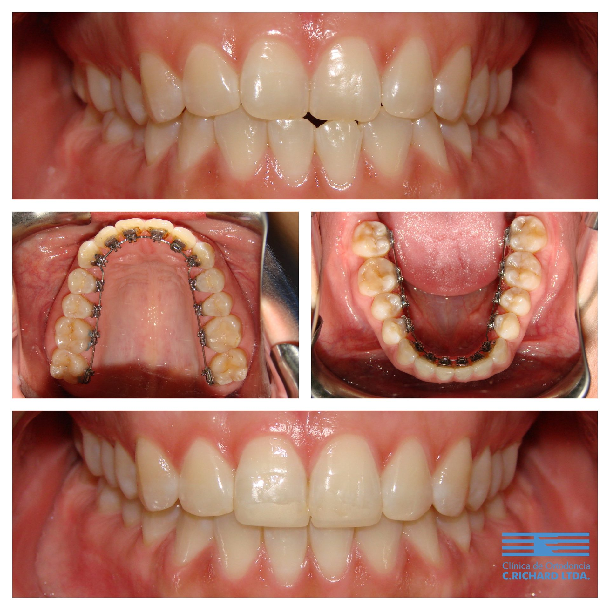
Brackets colocados en la cara interna de los dientes, completamente invisible desde el exterior.
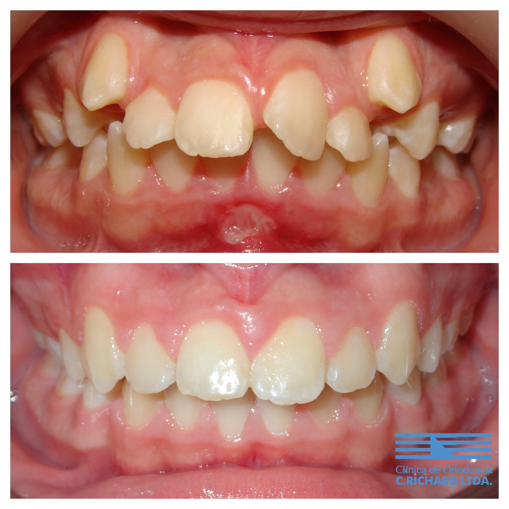
Tratamiento integral de la discrepancia entre el tamaño de los dientes y el espacio disponible en los maxilares.
Tratamos ortodoncia de adultos, cirugía ortognática, alineadores estéticos, ortopedia y corrección de hábitos.
Consulta tu casoNuestras instalaciones
Contamos con 8 boxes clínicos, sala de diagnóstico, laboratorio propio, sala de esterilización y equipo de rayos. Todo bajo un mismo techo.
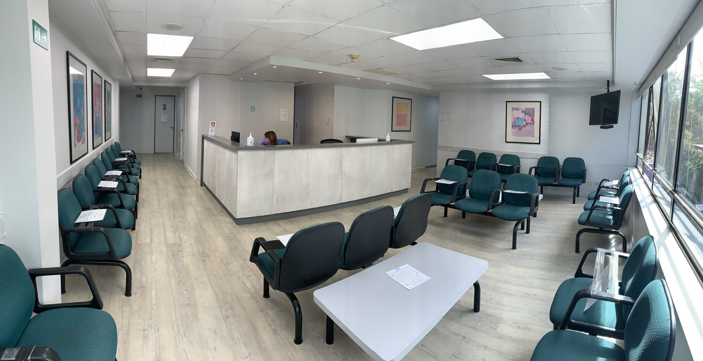
¿Listo para comenzar?
Da el primer paso hacia la sonrisa que siempre quisiste. Nuestro equipo te recibirá, evaluará tu caso y te explicará todas las opciones de tratamiento disponibles.
Lunes a Viernes · 9:00 a 19:30 hrs
Información para pacientes
Resolvemos las dudas más frecuentes de nuestros pacientes, organizadas por tema.
Examinamos al paciente y nos interesa escucharle para saber qué es lo que espera del tratamiento.
Realizamos una evaluación inicial para determinar el estado actual y las necesidades del paciente.
Determinamos si el tratamiento es necesario, identificamos el momento óptimo para comenzar y explicamos nuestra metodología de trabajo.
Si el paciente está de acuerdo con el presupuesto, se toman las radiografías necesarias, se agenda una nueva cita y se realizan los exámenes complementarios para establecer el diagnóstico definitivo.
Hay ciertos signos que pueden indicar que tu hijo necesita una evaluación ortodóncica: hábito de chuparse el dedo, apiñamiento o superposición de los dientes permanentes, dientes quebrados o ausentes, dificultad para masticar, respiración bucal y una mordida anormal (hacia adelante, atrás u otras variaciones). Si observas alguno de estos signos, es recomendable consultar a un ortodoncista.
Una mala mordida puede tener efectos adversos sobre la salud del paciente. Los dientes mal posicionados dificultan el trabajo del dentista en la realización de restauraciones. En cambio, los dientes bien posicionados y con soporte óseo adecuado son más fáciles de limpiar y, por lo tanto, es más probable que duren toda la vida del paciente. Además, corregir la mordida facilita la realización de coronas, puentes y otras restauraciones dentales.
Hay numerosas razones para que un adulto decida tener un tratamiento de ortodoncia: puede ayudarte a tener dientes más derechos, una sonrisa más agradable y mayor seguridad en situaciones sociales y laborales. Otros beneficios incluyen un cepillado dental más fácil, menor posibilidad de caries y problemas periodontales en el futuro, y una mayor eficacia masticatoria que facilita el tragar.
Prácticamente no existe un límite de edad para la ortodoncia. Tanto los dientes como los tejidos blandos son los mismos en niños y adultos, y se pueden tratar con éxito a cualquier edad. La diferencia radica en que los tratamientos en adultos suelen ser relativamente más largos. No obstante, controles periodontales periódicos pueden ser necesarios durante el tratamiento, o la interacción con otras especialidades como rehabilitación oral o cirugía ortognática, según se estime necesario.
La ortodoncia en adultos es tan posible como lo es en un adolescente o un niño. Aproximadamente el 30% de los tratamientos ortodóncicos se realizan en pacientes adultos de distintas edades, y estas intervenciones producen resultados significativamente positivos para quienes los reciben.
La mala alineación dental puede tener múltiples causas. Entre los factores conductuales y del desarrollo se encuentran el hábito de chuparse el dedo, sacar la lengua, la pérdida prematura de dientes de leche y vías respiratorias estrechas por amígdalas o adenoides agrandadas. También influyen factores estructurales y hereditarios como dientes de gran tamaño, ausencia de dientes, exceso de espacios y maxilares pequeños.
La herencia es una combinación compleja de factores. Ambos padres pueden tener dientes perfectamente alineados, y el primer hijo puede no tener ningún problema. Sin embargo, el segundo hijo puede presentar dificultades, como si los factores hereditarios estuvieran trabajando unos contra otros. Por eso se recomienda que un ortodoncista evalúe la mordida de los hijos y realice el tratamiento adecuado, sin asumir ni lo mejor ni lo peor basándose solo en el historial dental familiar.
Las visitas al ortodoncista generalmente no generan dolor inmediato. Sin embargo, la activación de los aparatos puede causar molestias o sensibilidad en las horas siguientes a la consulta. Esta sensación suele durar entre 48 y 72 horas mientras los dientes se asientan en su nueva posición. Con cada ajuste sucesivo los pacientes experimentan molestias leves, y los propios pacientes reportan una disminución del dolor a medida que avanza el tratamiento.
El dolor o molestias dentales en ortodoncia es un fenómeno muy común al inicio del tratamiento y es producto del movimiento de uno o más dientes. Estas molestias pueden durar 2 a 3 días después de instalados los aparatos, y para aliviarlas se puede usar un analgésico recomendado por el doctor. En el caso de los aparatos removibles, no es conveniente sacárselos para que desaparezcan las molestias, ya que de esa forma siempre molestarán al ponérselos. Lo correcto es usarlos, ayudarse con un analgésico y aguantar un poco, ya que luego esas molestias desaparecerán.
La duración de un tratamiento ortodóncico varía significativamente según su complejidad. Una simple corrección de espacios anteriores puede tomar unos pocos meses, mientras que el enderezamiento de dientes muy apiñados requerirá más tiempo. Los casos más complejos, como la corrección completa de una mordida severa, pueden extenderse dos años o más.
Los controles ortodóncicos se programan en intervalos que varían según las necesidades del tratamiento, generalmente entre dos/tres y seis semanas.
Una nutrición y un cuidado adecuados son fundamentales para mantener los dientes y encías sanos durante el tratamiento. Los aparatos crean espacios donde los restos de alimentos quedan atrapados fácilmente, por lo que se recomienda consultar con el doctor las técnicas correctas de cepillado y enjuague, y considerar el uso de un irrigador oral. Algunos alimentos deben evitarse: los pegajosos (chicle, toffees) y los duros o crujientes (frutos secos, palomitas) pueden dañar los alambres y soltar los brackets. Los alimentos sólidos como manzanas y carnes se pueden comer cortados en trozos pequeños. Si no es posible lavarse los dientes después de comer, enjuagarse la boca con abundante agua ayuda a reducir los residuos.
La ortodoncia no tiene contraindicación con las actividades normales de los niños, incluso con deportes de contacto, siempre que se usen protectores bucales adecuados. Algunos instrumentos musicales pueden incluso resultar beneficiosos durante el tratamiento. El habla puede verse levemente afectada solo durante los primeros días. La ortodoncia es una parte normal de esta etapa de la vida y el tratamiento no debe impedir ninguna actividad que el paciente realice habitualmente.
Uso: Los alineadores deben usarse 22 horas al día, retirándolos solo para comer y cepillarse los dientes. Después de cada comida, cepilla tanto los dientes como los alineadores, o al menos enjuágalos con agua. Las bebidas sin azúcar y no ácidas pueden tomarse con los alineadores puestos; las azucaradas o ácidas requieren retirarlos o limpiarlos después. Los alimentos y bebidas muy calientes pueden deformar el plástico.
Cuidado: Guarda los alineadores en su estuche cuando no los uses. Límplalos suavemente con un cepillo suave y agua a temperatura ambiente. Evita las tabletas para dentaduras y el enjuague bucal, ya que opacifican el plástico.
Avance: Pasa al siguiente alineador solo con indicación del ortodoncista. Conserva los anteriores y tráelos a los controles. Si pierdes un alineador, prueba el siguiente; si calza bien, úsalo el tiempo restante más su período asignado. Si no calza, vuelve al anterior y contacta a la clínica.
Existen empresas que ofrecen alineadores enviados directamente al domicilio, sin consultas presenciales y a precios atractivos. Sin embargo, estas empresas planifican el tratamiento sin radiografías, sin evaluación ósea ni diagnóstico clínico adecuado. Ciertos movimientos no pueden lograrse solo con alineadores sin herramientas auxiliares y sin monitoreo periódico. Las simulaciones en pantalla no siempre se traducen en resultados clínicos reales. Europa y Estados Unidos están reconsiderando estos tratamientos tras observar daños en pacientes. Apoyamos las innovaciones que mejoran la calidad de vida, pero creemos firmemente que los especialistas deben guiar el uso de la tecnología para evitar daños. — Dr. Alberto Del Real V.
Al finalizar el tratamiento ortodóncico, se usan contenciones para evitar que los dientes vuelvan a su posición original. Existen dos tipos: fijas (un pequeño alambre en la cara interna de los dientes que los mantiene en posición) y removibles (placas o planos de relajación). Los primeros seis meses post-tratamiento son los más críticos para el uso consistente de las contenciones. La clínica recomienda mantenerlas el mayor tiempo posible, ya que no hay inconvenientes en su uso de por vida. Esto se debe a que los dientes se mueven naturalmente a lo largo de la vida por el proceso de crecimiento y envejecimiento.
La experiencia de ortodoncistas alrededor del mundo, respaldada por evidencia científica, indica que las posibilidades de mantener los resultados a través del tiempo son muy altas, siempre y cuando el paciente siga correctamente las instrucciones de la etapa de contención. Los dientes y maxilares, como todas las partes del cuerpo, están en constante cambio; los dientes que han estado en mala posición por largo tiempo tienden a querer volver a su posición inicial, y esto puede verse afectado además por el proceso natural de envejecimiento. Pequeñas recidivas pueden ocurrir, pero se minimizan con el uso correcto de las contenciones.
La cirugía ortognática es una forma de cirugía dentomaxilofacial que permite corregir casos severos de alteraciones dentofaciales o de gran descoordinación de los maxilares. Puede ofrecer resultados espectaculares en los casos en que las relaciones intermaxilares están tan severamente mal puestas que el solo movimiento de los dientes no puede lograr los resultados esperados. Requiere una estrecha colaboración entre el ortodoncista y el cirujano maxilofacial para asegurar una planificación y resultados óptimos.
Cuando los maxilares están severamente desalineados, los aparatos convencionales por sí solos no pueden lograr una mordida correcta. El tratamiento combinado de ortodoncia y cirugía se indica cuando los procedimientos convencionales no permiten lograr una oclusión estable o una armonía dentofacial aceptable. También se recomienda para pacientes que buscan modificaciones estéticas junto a correcciones dentales, como reducir la proyección del mentón o reducir la exposición de las encías al sonreír. Para muchos adultos con anomalías dentofaciales severas, esta es la única opción de excelencia.
Los problemas más frecuentemente tratados son: mentón prominente o retraído, exceso de exposición de las encías al sonreír, incapacidad de lograr contacto labial con los músculos faciales en reposo, y elongación vertical excesiva del rostro. Estos pueden deberse a predisposición genética, lesiones o alteraciones del desarrollo.
El tratamiento combinado ofrece tres beneficios principales:
La mayoría de los pacientes requieren brackets para alinear los dientes, coordinar las arcadas y cerrar espacios de extracción antes de la cirugía. La cirugía no se realiza hasta que los dientes hayan quedado alineados. Durante la intervención quirúrgica, los aparatos ortodóncicos sirven para estabilizar los dientes y el hueso. Tras la cirugía, se continúa con ortodoncia posquirúrgica para lograr la alineación final de los dientes en la nueva posición de los maxilares.
En el enfoque "Cirugía Primero", los aparatos de ortodoncia se instalan inmediatamente antes de la cirugía y se activan durante el procedimiento quirúrgico una vez que los maxilares están fijados. Este método permite duraciones de tratamiento significativamente más cortas y brinda al paciente mejoras estéticas faciales inmediatas desde el inicio del tratamiento ortodóncico.
En pacientes jóvenes, el crecimiento facial mediante una adecuada intervención ortodóncica puede a veces corregir o compensar situaciones de exceso o deficiencia mandibular. Los procedimientos de ortopedia dentofacial pueden guiar el crecimiento óseo y eliminar la necesidad futura de cirugía. Sin embargo, en adultos y en quienes han completado su crecimiento óseo, la inadecuada relación entre los dientes y el hueso suele necesitar tratarse con cirugía.
Como cualquier procedimiento quirúrgico, la cirugía ortognática conlleva los riesgos vinculados a cualquier tipo de cirugía. Sin embargo, no son técnicas experimentales: se realizan rutinariamente en clínicas y hospitales por cirujanos maxilofaciales con amplia experiencia. Se recomienda al paciente preguntar a su cirujano oral que le explique los riesgos asociados antes de proceder.
Un buen cuidado de los aparatos y evitar comer cosas muy duras o pegajosas es la mejor manera de prevenir urgencias en ortodoncia. Siempre puedes venir a atender una urgencia, incluso durante las vacaciones — no cerramos. Si estás lejos, puedes llamarnos o escribirnos para que te asesoremos cómo manejarla o si puede esperar hasta el próximo control.
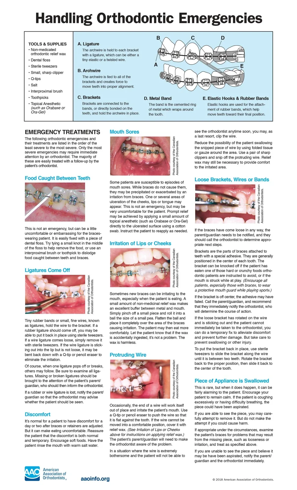
Ver guía completaContáctanos
Paul Harris 10.349, oficina 305
Piso 3, Las Condes, Santiago